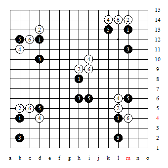

排布规则
#1 排布规则 作者：茗弈宽容 发表时间：2010-3-30 16:35:52
偶有一念，说出供大家品头论足。 排布规则
1、假黑方指定开局（初期可沿用现规则下的26种开局，且天元做为元点）--黑行第1手及第2手白及第3手黑。这个步骤易名为：排兵
2、假白方同样连落三子，也就是说行第4手、第5手、第6手。这个步骤称：布阵
3、假黑方可选择交换与否
4、后面一人一手棋同现规则。
这个规则黑白从落子形式上相同：都是替对方走一子，自己连行两子。比现规则简化省去了五手打点，现规则只有根据不同的4，黑5选择相应点与构“平衡”。而现在白6参与了“平衡”构造，可下的变化必然增多。同时也解放了一些弱4变化。
从表面上看，假白方构造平衡负担过重，但随着实战与研究的增多，对于各种开局的456搭建“平衡”会形成定式的（五手打点也不是一定时间才总结出来的吗？）。而对于一场比赛棋手的假黑、白次数基本相当的。
而对于456的搭建是否成功，也正能看出棋手水平的高低与赛前功课完成的程度。如果全面开放不限天元、不限26种开局，那么假黑方准备难度就加大。
以下瑞星的几个456的搭配，大家看能应用吗？我的棋力有限，只有用黑石帮助简单拆一下，好像黑白相当。

转自中国连珠
#2 Re:排布规则 作者：屏蔽 发表时间：2010-3-30 16:53:52
白棋太容易准备。#3 Re:排布规则 作者：淡红的秋樱 发表时间：2010-3-30 18:38:59
参考sakata规则的胜率